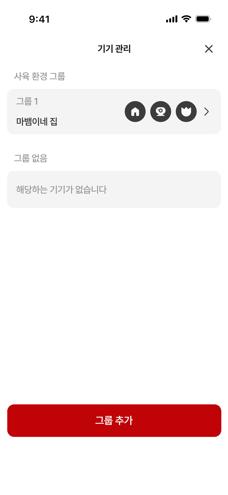
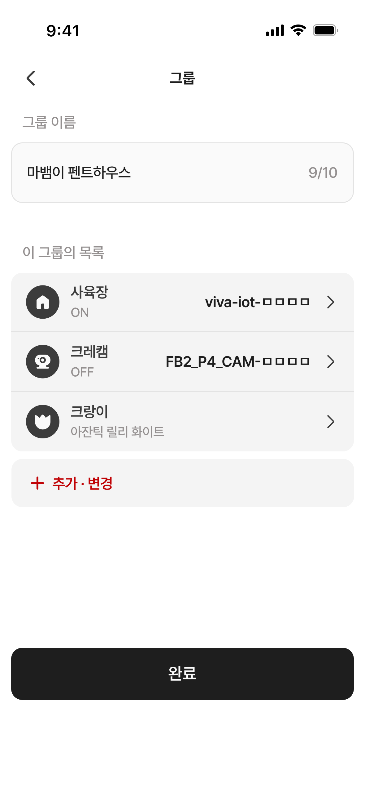
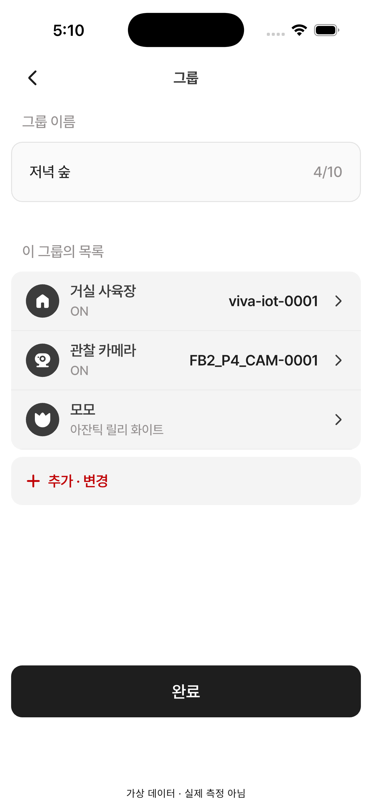
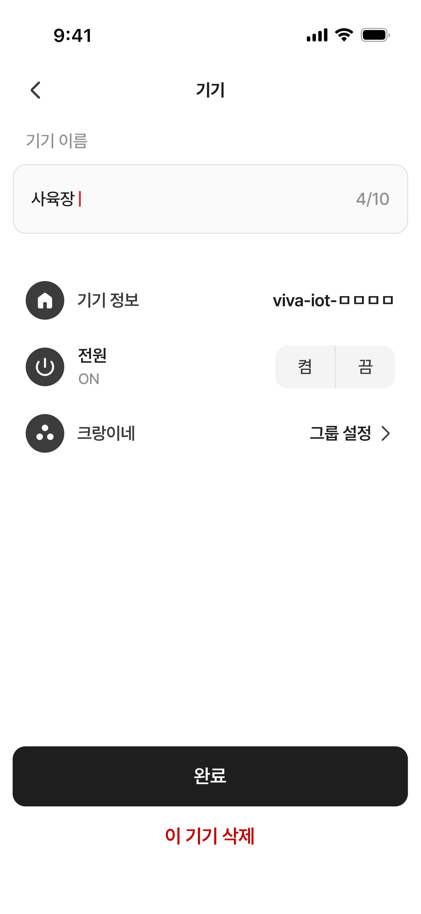
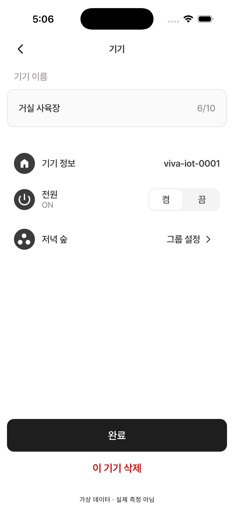
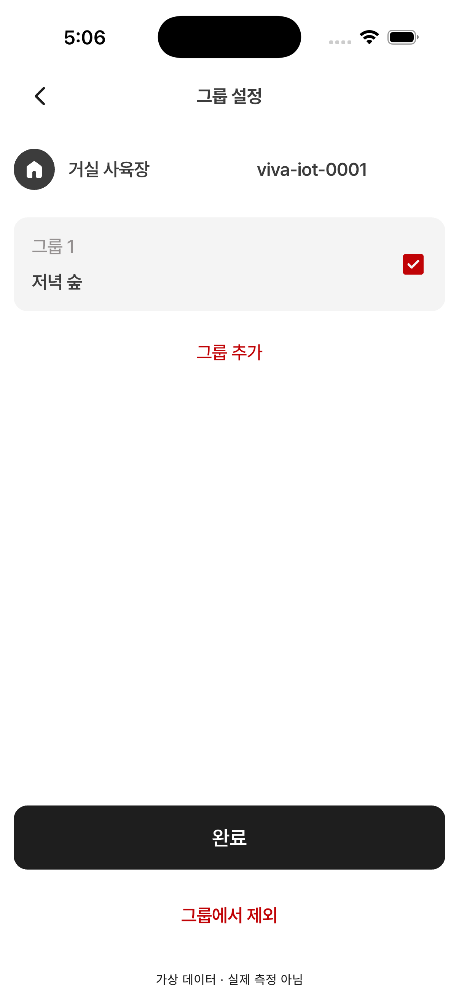
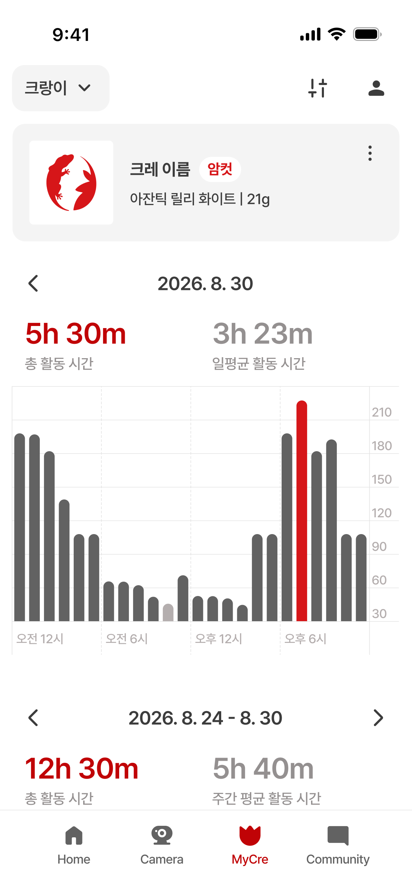
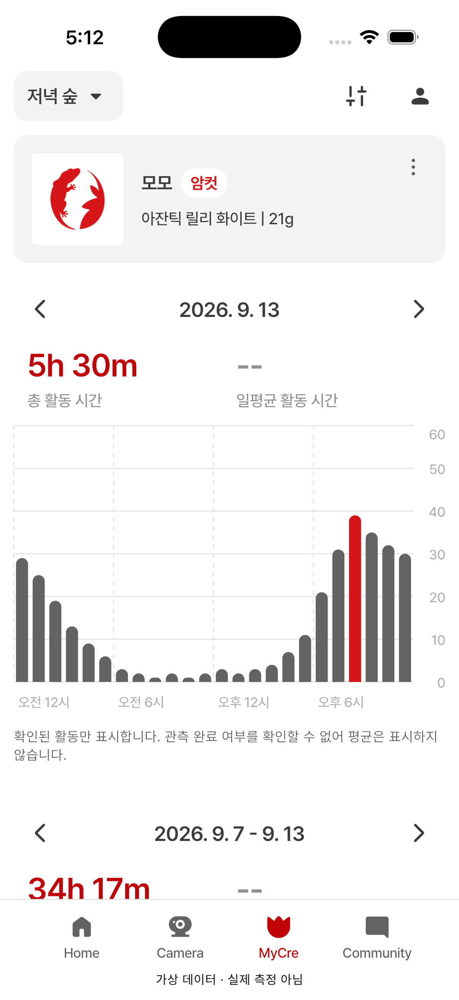
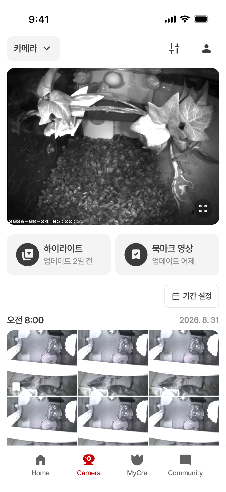
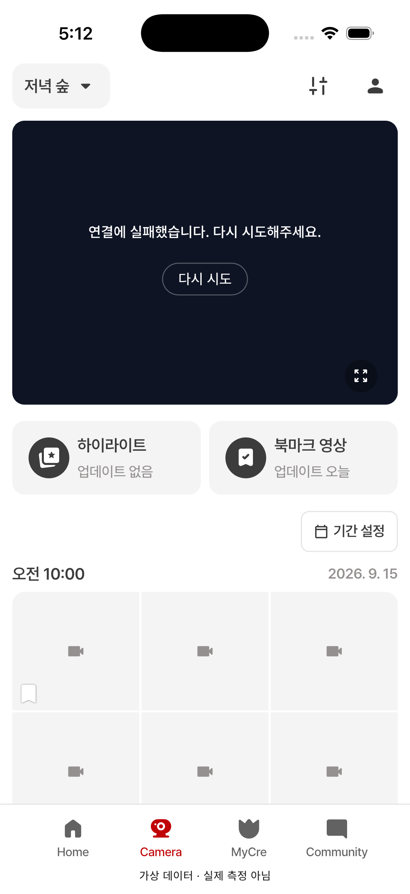

04 기기 관리
빈 그룹 회색 카드·64px 높이 반영 확인. 상태바와 하단 safe area, 가상 이름 차이는 디자인 오류로 분류하지 않음.


2026-09-15 · e3471c6 · 승인 16항목 반영 후 추가 검토
Talk to Figma로 확보한 PNG·노드 보관본 기준. 이번 세션에서는 원본의 실시간 변경 여부를 확인하지 못했습니다.
양쪽을 같은 논리 픽셀 배율로 표시했습니다(393pt/402pt). 세로로 긴 Figma 폼은 전체 원본이며 앱은 현재 뷰포트 캡처입니다.
가상 이름·수치·촬영 날짜·상태바·하단 검수 표시는 레이아웃 오류와 구분합니다. 새 차이의 수정 승인은 아직 받지 않았으며 앱 코드는 변경하지 않았습니다.
승인한 카드·구분선·상세 화살표 반영 확인. 이름·ON 상태는 가상 데이터 차이.


행 간격·그룹 설정 화살표·온라인 보조 문구 제거는 반영. 전원 스위치는 Figma의 중앙 구분선 대신 흰 선택 캡슐이 보여 표현 차이 있음. ON 고정 기능은 확정 유지.


Figma 765:7526 노드 기준: 구성원 원형 아이콘 3개가 빠짐. 그룹 추가는 + 아이콘·회색 52px 카드·좌측 정렬이어야 하나 현재 가운데 텍스트 버튼. 기기 정보 행 좌측 24px 대신 12px, 상단 122px 대신 130px. 그룹 카드 높이 78px 대신 약82px. 제외 버튼 위치는 반영됨. 원본 PNG 미보관으로 이 페이지는 노드 측정값 비교.
원본 PNG 미보관. Talk to Figma 765:7526 노드 측정값을 비교했습니다.

빈 그룹 회색 카드·64px 높이 반영 확인. 상태바와 하단 safe area, 가상 이름 차이는 디자인 오류로 분류하지 않음.

선 색·굵기 반영 확인. 최상단 27°/80% 눈금 일부 잘림. Figma 세로 격자·외곽선 누락. 제어 기록의 분무 원은 Figma 파랑인데 현재 남색. 데이터에 따른 선 모양·눈금 범위는 정상 차이.


막대 상단 라운드·시간 세로 점선 반영 확인. 드롭다운은 Figma V자 대신 채운 삼각형. 평균 --·관측 미확인 안내는 서버 계약 관련 차이이며, 안내로 주간 섹션이 내려감. 값이나 안내를 임의 삭제하지 않음.


입력칸 테두리·체크 원본 비율·검색/달력 회색 반영 확인. 사진 추가 아이콘은 원본보다 진하게 보이며 textTertiary로 일괄 tint 중. 성별 선택 구분선은 원본 노드에 있으나 현재 Container에 없음. 이번 캡처 하단 밖의 입양일·체중·그룹·메모·저장 버튼은 판정 보류.


카드 레이아웃과 승인 업데이트 접두사/없음 반영 확인. 공통 헤더 드롭다운 V자→채운 삼각형 차이. 라이브 실패·회색 썸네일은 검수 데이터 연결 상태로 시각 일치 판정 제외.

